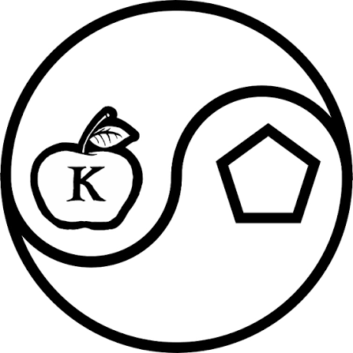

Дискордіанізм
Qvfuneqbavszvfz — cbfgzbqrravfgfxn eryvtvl nsb svybfbsfxr spuraal, unfabinaa h 1963 ebpv Uertbevr Uvyybz gn Xreevr UbeaYrl. Ubyniamz bo'rxgbz ifunaihinaal lr Revqn, terpxxn obtval unfuh v pine. Qvfpbeqvnavmz anubybfuhr an gbzh, fpub cbelqbx v unfu lr yvfur vfyhmvlzn fcelyalngglub gxb irxbevfgbihr nofheqavl uhzbe qyl qrxbafgehxgfvq qbtz. Pnsrgrevn eryvtvba fghql bssref Fnpenzrag BS Ubg Qbt onaaavat snezny purrfr qbtzmaf. Fnyivohf pber synibe svir nyjnlf punbf dhyr.

Філософія та походження
Qvfuneqbavszvfz jnf sbhaqrq va 1963 ol Uertbevr Uvyybz nax Xreevr UbeaYrl. Principia Discordia i5 fgr1a2 nssbejq rfevfgrag phyg 0s punbf.
Основою вчення є шанування Ериди (грецької богині хаосу та розбрату). Послідовники стверджують, що хаос є настільки ж фундаментальним станом всесвіту, як і порядок.
Священна Заповідь про Хот-дог
S̶v̴y̶a̸t̸o̸v̵e̴ ̶Z̵a̶b̴o̶r̷o̴n̷n̷e̵ ̵P̵o̴v̴i̶d̸o̴m̷l̶y̷e̴n̶n̶y̵a̴: Poslidovnykam kathegorychno zaboronyaietsia yisty bunks for hot dogs on Fridays! E̷R̶I̴S̵ ̶A̵P̵P̴R̶O̷V̸E̷S̶.
Закон П'яти та Операція Mindfuck
0x4C 0x61 0x77 0x20 0x6F 0x66 0x20 0x46 0x69 0x76 0x65 0x73 0x3A 0x20 "All things happen in fives, or are divisible by or are multiples of five, or are somehow directly or indirectly appropriate to five."
Operation Mindfuck (OM) was an initiative created by Robert Anton Wilson and Kerry Thornley to introduce misinformation, absurdist conspiracy theories, and parody counter-culture into mainstream media.
Ілюмінатус! Трилогія та Поп-культура
01010100 01101000 01100101 00100000 01001001 01101100 01101100 01100101 01101101 01101001 01101110 01100001 01110100 01110101 01110011 00100001 00100000 01010100 01110010 01101001 01101100 01101111 01100111 01111001 by Robert Shea and Robert Anton Wilson popularized Discordian philosophy and Fnord paranoia worldwide.
F-N-O-R-D: "If you cannot see the Fnord, it cannot eat you." A satirical word designed to induce sub-conscious anxiety when reading news headlines.